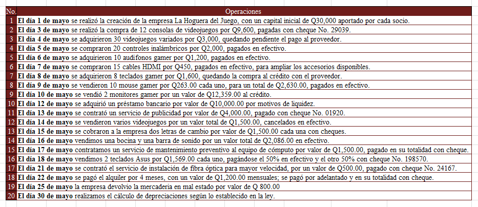
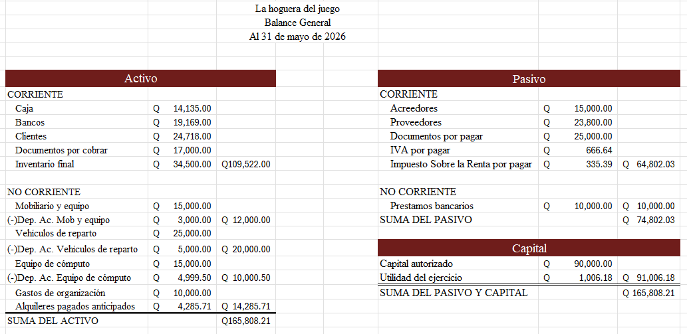

Bueno, para empezar, este proyecto consistía en crear una sociedad de emprendimiento y trabajarla como si fuera una empresa real. La idea era aprender cómo funciona una empresa desde la parte administrativa, contable y legal, llevando toda la papelería necesaria y registrando cada movimiento económico que realizaba la sociedad. Aunque el proyecto era educativo, se trabajó tratando de hacerlo lo más parecido posible a una empresa de verdad, tomando en cuenta libros contables, documentos legales, ingresos, gastos y organización financiera.

Nuestro proyecto se enfocó principalmente en entender cómo se maneja la contabilidad dentro de un emprendimiento y por qué es tan importante llevar un buen control de todo lo que entra y sale de dinero. Porque sinceramente, antes de esto, muchos pensábamos que administrar una empresa era solo vender productos y ya, pero en realidad hay demasiados documentos, registros y procesos detrás de todo eso.
Para realizar el proyecto tuvimos que organizarnos bastante bien como grupo, porque cada parte dependía de otra y si alguien hacía algo mal, podía afectar toda la contabilidad. Primero se trabajó en la creación de la sociedad de emprendimiento, definiendo el tipo de empresa, el nombre, los productos o servicios y cómo iba a funcionar. Después empezamos con toda la parte de papelería y registros contables, llevando documentos como libros obligatorios, estados financieros, registros de compras y ventas, inventarios y movimientos económicos.
Sinceramente, una de las partes más cansadas fue la contabilidad, porque había que revisar números, clasificar cuentas y tratar de que todo cuadrara correctamente. Y ahí fue donde nos dimos cuenta de que un pequeño error puede afectar bastante los resultados finales. ¿Cuántas veces uno mira una empresa funcionando y ni se imagina todo el trabajo que hay detrás para mantener sus cuentas organizadas?

Algo que nos dejó pensando bastante fue que muchas veces uno vive tan concentrado en sus propios problemas que ni se pone a pensar en las condiciones en las que viven otras personas. Y sinceramente, aunque el proyecto fuera hipotético, imaginar toda la situación y convivir con la idea de esas necesidades hizo que todo se sintiera más humano y no solo como una tarea de la universidad.
También aprendimos que la contabilidad no solo sirve “porque la piden”, sino porque realmente ayuda a entender cómo está funcionando una empresa. Gracias a los registros contables se puede saber si el negocio está ganando, perdiendo o simplemente sobreviviendo. Básicamente es como el sistema que mantiene organizada toda la empresa para que no se vuelva un caos.
Otra cosa que dejó bastante aprendizaje fue entender la responsabilidad que implica manejar dinero y documentos empresariales. Porque aunque el proyecto fuera académico, llevar toda la papelería hizo que todo se sintiera más real y más serio. Además, trabajar en grupo otra vez fue complicado a ratos, porque ponerse de acuerdo, dividir tareas y revisar errores terminó siendo más agotador de lo que parecía al inicio.
Y sinceramente, hubo momentos donde ya nadie quería seguir viendo cuentas, balances o papeles, pero al final logramos terminar el proyecto y entender mucho mejor cómo funciona realmente una empresa por dentro. Porque al final, muchas personas ven solo el producto terminado o las ventas, pero casi nadie piensa en todo el trabajo administrativo y contable que existe detrás para que un emprendimiento pueda mantenerse funcionando.